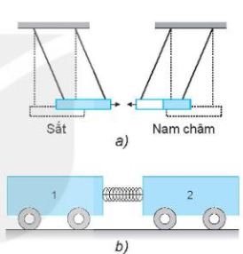
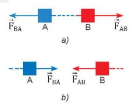
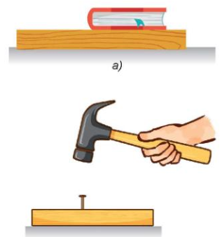
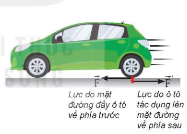

Ngày soạn:
Môn: Vật lí 10 – Bộ sách Kết nối tri thức với cuộc sống
Số tiết: 1 (Tiết 26 theo PPCT)
| Bước thực hiện | Nội dung các bước |
|---|---|
|
HOẠT ĐỘNG 1: KHỞI ĐỘNG (5 phút) |
Mục tiêu: Tạo hứng thú, dẫn dắt học sinh vào bài mới. Nội dung: Học sinh quan sát hình ảnh và trả lời câu hỏi. Sản phẩm: Câu trả lời của học sinh. Tổ chức thực hiện:
Hình ảnh minh họa: Hai lực kế móc vào nhau |
|
HOẠT ĐỘNG 2: HÌNH THÀNH KIẾN THỨC (25 phút) |
Mục tiêu: Hình thành định luật 3 Newton, khái niệm lực và phản lực. Nội dung: Tìm hiểu định luật 3 Newton, các đặc điểm của lực và phản lực. Sản phẩm: Câu trả lời, kết quả thảo luận, công thức. Tổ chức thực hiện: 1. Lực tương tác giữa hai vật
 Hình 16.1. Thí nghiệm về sự tương tác giữa các vật PHIẾU HỌC TẬP SỐ 1Quan sát thí nghiệm được mô tả trong Hình 16.1. Câu 1: Một thanh sắt và một thanh nam châm được treo như Hình 16.1a. Trong thí nghiệm này, lực nào làm cho thanh nam châm dịch chuyển lại gần thanh sắt? .................................................................................................................
Câu 2: Xe lăn 1 có khối lượng \(m_1\) và có gắn một lò xo nhẹ. Xe lăn 2 có khối lượng \(m_2\). Ta cho hai xe áp lại gần nhau bằng cách buộc dây để nén lò xo (Hình 16.1b). Quan sát hiện tượng xảy ra khi đốt đứt sợi dây buộc. .................................................................................................................
Thảo luận để làm sáng tỏ ý kiến sau: Lực không tồn tại riêng lẻ. Các lực hút hoặc đẩy luôn xuất hiện thành từng cặp giữa hai vật. 2. Định luật 3 Newton
 Hình 16.2. Cặp lực và phản lực 3. Các đặc điểm của lực và phản lực
 Hình 16.3. Ví dụ về lực và phản lực PHIẾU HỌC TẬP SỐ 2Câu 1: Cặp lực và phản lực có những đặc điểm gì? .................................................................................................................
Cặp lực và phản lực có phải là hai lực cân bằng hay không? Tại sao? .................................................................................................................
Câu 2: Hãy chỉ rõ điểm đặt của mỗi lực trong mỗi cặp lực ở Hình 16.2 a, b. a) Quyển sách nằm yên trên mặt bàn (Hình 16.3a) b) Dùng búa đóng đinh vào gỗ (Hình 16.3b) .................................................................................................................
Câu 3: Lực do búa tác dụng vào đinh và phản lực của đinh lên búa có đặc điểm gì? .................................................................................................................
4. Ví dụ về lực và phản lực trong thực tế
 Hình 16.4. Lực và phản lực khi ô tô chuyển động |
|
HOẠT ĐỘNG 3: LUYỆN TẬP (10 phút) |
Mục tiêu: Vận dụng định luật 3 Newton để giải thích hiện tượng. Nội dung: Giải bài tập ví dụ SGK. Sản phẩm: Lời giải của học sinh. Tổ chức thực hiện:
PHIẾU HỌC TẬP SỐ 3Câu 1: Trong thí nghiệm ở phần mở đầu bài học, nếu cả hai người cùng kéo nhưng để lực kế di chuyển về phía một người (ví dụ cùng di chuyển hai lực kế sang phải) thì số chỉ của hai lực kế sẽ giống nhau hay khác nhau? Làm thí nghiệm kiểm tra dự đoán. .................................................................................................................
Câu 2: Nêu thêm một số ví dụ trong thực tế và thảo luận để làm sáng tỏ các đặc điểm sau đây của lực và phản lực:
.................................................................................................................
Câu 3: Một ô tô chuyển động trên mặt đường (Hình 16.4), nếu lực do ô tô tác dụng lên mặt đường có độ lớn bằng lực mà mặt đường đẩy ô tô thì tại sao chúng không "khử nhau"? .................................................................................................................
|
|
HOẠT ĐỘNG 4: VẬN DỤNG (5 phút) |
Mục tiêu: Vận dụng kiến thức vào thực tế và giao nhiệm vụ về nhà. Nội dung: Trả lời câu hỏi vận dụng, giao nhiệm vụ năng lực số. Sản phẩm: Câu trả lời của học sinh, sản phẩm bảng/đồ thị. Tổ chức thực hiện:
PHIẾU HỌC TẬP SỐ 4Câu 1: Hãy chỉ ra cặp "lực và phản lực" trong các tình huống sau: a. Ô tô đâm vào thanh chắn đường; b. Thủ môn bắt bóng; c. Gió đập vào cánh cửa. .................................................................................................................
Câu 2: Trong một tai nạn giao thông, một ô tô tải đâm vào một ô tô con đang chạy ngược chiều. Ô tô nào chịu lực lớn hơn? Ô tô nào nhận được gia tốc lớn hơn? Hãy giải thích. .................................................................................................................
Câu 3: Để xách một túi đựng thức ăn, một người tác dụng vào túi một lực bằng 40 N hướng lên trên. Hãy miêu tả "phản lực" (theo định luật III) bằng cách chỉ ra: a. Độ lớn của phản lực. b. Hướng của phản lực. c. Phản lực tác dụng lên vật nào? d. Vật nào gây ra phản lực này? .................................................................................................................
|
.................................................................................................................
.................................................................................................................
.................................................................................................................
Duyệt TCM